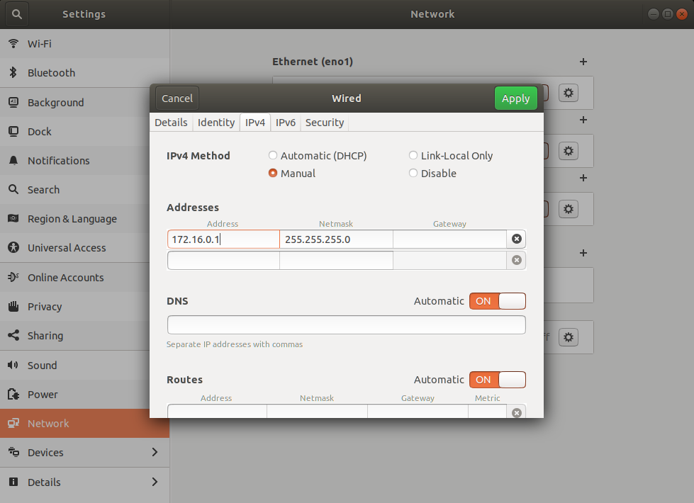
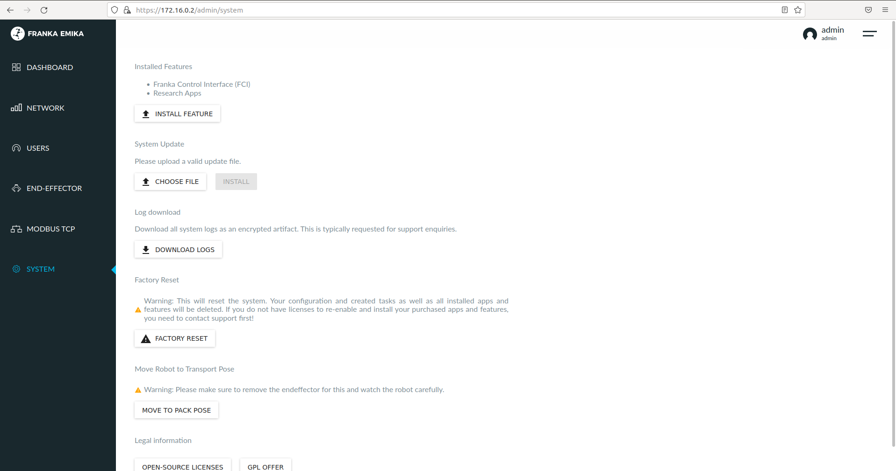

Network Configuration¶
Setting Up the Robot¶
If this is the first time you are using the robot, please follow the Franka Robot Setup instructions located in the booklet that accompanies the robot and set the username and password for the robot.
Next set the Robot Network to be
172.16.0.2with a netmask of255.255.255.0as shown in the photo below.
{kind=link}
Editing the Ethernet Network Configuration¶
Insert the ethernet cable from the Black Franka Control box to the Control PC.
Turn on the Franka Control box.
Go to Edit Connections in the Ubuntu Network Connections Menu of your Control PC.
Select the Ethernet connection that corresponds to the port that you plugged the ethernet cable into and then click edit.
Go to the IPv4 Settings Tab and switch from Automatic (DHCP) to Manual.
- Add an address of
172.16.0.1with netmask255.255.255.0as shown in the picture below and then click save. - 
- Add an address of
Check to see if you can ping
172.16.0.2from any terminal.If any issues arise, refer to here: https://frankaemika.github.io/docs/troubleshooting.html#robot-is-not-reachable
{kind=link}
Entering Franka Desk¶
- Go to the web browser and type in
https://172.16.0.2/ - Add an exception if there is a security certificate error.
- Login to the robot with the correct credentials or complete setup with the robot. You should now be able to see the Franka Desk GUI in the web browser.
- If the username and password do not work, there is a method of factory resetting the Franka located here: https://www.franka-community.de/t/reset-admin-password-or-reset-to-factory-settings/184
Making sure Franka Control Interface is Installed¶
Go to the Settings menu of Franka Desk using the dropdown menu in the upper right corner.
Click on System on the left hand side.
- Make sure Franka Control Interface (FCI) is installed as shown in the photo below.
- 
If it is not installed, our Franka-Interface will not work, so you will need to contact the distributor you purchased the Franka Panda from or Franka Emika to receive the Feature file.
Then you will need to press the install feature button and upload the file to the Franka Control Box.
The Franka may need to be rebooted before it shows up as installed.
{kind=link}
Now you are ready to install FrankaPy to control the robot following instructions here.